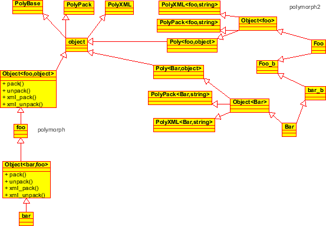

C++ has two notions of polymorphism, compile-time and runtime.
Compile-time polymorphism (aka generic programming) is implemented in
terms of templates, and allows the provision of code that can work on
many different types of objects. On the other hand, runtime
polymorphism involves the use of virtual member functions. Whereever generic programming can
solve a task, it is preferred over runtime polymorphism, as virtual
member functions introduce procedure call overhead, and inhibit
optimisation. Furthermore, the use of a copyable, assignable and
serialisable class like shared_ptr introduces additional overheads.
Nevertheless, there are situations that cannot be solve with
compile-time polymorphism, for example a container containing objects
of varying types. The smart, modern way to do runtime polymorphism is
via a smart pointer, such as shared_ptr, found in TR1. To use
shared_ptr in a DCAS fashion, your object heirarchy must
implement the following interface (provided as an abstract base class
PolyBase), and the PolyPackBase .
template <class T>
struct PolyBase: public PolyBaseMarker
{
typedef T Type;
virtual Type type() const=0;
virtual PolyBase* clone() const=0;
/// cloneT is more user friendly way of getting clone to return the
/// correct type. Returns NULL if \a U is invalid
template <class U> U* cloneT() const;
virtual ~PolyBase() {}
};
template <class T>
struct PolyPackBase: virtual public PolyBase<T>
{
virtual void pack(pack_t&, const string&) const=0;
virtual void unpack(unpack_t&, const string&)=0;
};
Any type may be acceptable for the type identifier system, but needs
to be orderable if using the Factory
class. Typically, ints, enums or strings are used for
the type class. A nice implementation is to use the typeName function
to return a string representation of the type:
string type() const {return typeName<T>();}
The create() method is a static factory method that allows you to
create an object of the type specified. This is not part of the
PolyBase interface, but needs to be provided by the base class
of the object heirarchy. Its signature is
static object* create(const Type&);
The Factory class may used for this purpose: If the base class
of your class heirarchy is object, and you are using strings
for your runtime type identifier, then declare a factory object as
Factory<object,string> factory;
static object* object::create(const string& n)
{return factory.create(n);}
The only other thing required is to register the type heirarchy. This
is most conveniently and safely done at factory construction time, and indeed the
Factory class requires you provide a custom default
constructor, but type registration can happen at any time via the
Factory::registerType<T>() method, which registers type
T. The factory method requires that all objects in teh class
heirarchy are default constructible, but other than that makes no
assumptions other than it must have a type() method.
To assist in deriving classes from PolyBase, the Poly template
is provided.
template <class This, class Base=object> struct Poly;The first template argument
This is the class you're currently defining,
and Base is the base class you are deriving from, which may be
object, or may be another class higher in the
hierarchy. This provides an implementation of the clone method. For
each of the serialisation descriptors, there is a similar template, so
PolyPack, PolyXML and
PolyJson.
template <class T, class Type>
struct PolyPack: virtual public PolyPackBase<Type>
{
void pack(pack_t& x, const string& d) const;
void unpack(unpack_t& x, const string& d);
};
These can be used in a ``mixin'' fashion by means of multiple
inheritance, eg.
template <class T>
struct Object:
public Poly<T,object>,
public PolyPack<T,string>,
public PolyXML<T,string>
{
string type() const {return typeName<T>();}
};
One thing to be very careful of is your inheritance heirarchy. Multiple inheritance can easily cause a "no unique final overrider", because the implementations of the various virtual function come in from different classes that are mixed in. In the examples directory, are two different solutions to this problem - the first is providing a custom implementation template class, by manually copying the mixin definitions, and the second actually uses the mixin definitions through inheritance, but annotates each class with the base template after the class is defined. The two solutions are shown in UML in figure 1.
|  |